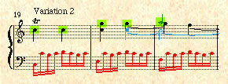

MUSIC IR 2002MUSIC IR 2001 |
2nd Annual
|
|
|  |
Indiana University
Bloomington, Indiana, USA
October 15-17, 2001
MUSIC IR 2002
Interest in music information retrieval (music IR) is exploding. This is not surprising: music IR has the potential for a wide variety of applications in the educational and academic domains as well as for entertainment. Yet, until now, there has been no established forum specifically for people studying music retrieval.
Building upon research being conducted around the world, the International Symposium on Music Information Retrieval is the only music-IR meeting. The resulting information interchange will enable scholars to move more quickly towards viable solutions to many problems. The symposium will include both invited and submitted papers.
Join us for ISMIR 2001 – an intensive and lively forum on the rapidly emerging realm of Music Information Retrieval (Music IR)! ISMIR 2001 builds upon the very successful ISMIR 2000 meeting held last year in Plymouth, Massachusetts, USA.
Research Topics
Topics to be covered may include, but are not limited to, the following:
- Music representation and indexing
- Estimating similarity of music
- perceptual criteria such as pitch, rhythm, timbre;
- musical criteria such as form, genre, etc. - Problems of recognizing music optically and/or via audio
- Routing and filtering for music
- Building up music databases
- Evaluation of music-IR systems
- Intellectual property rights issues
- User interfaces for music IR
- Issues related to musical styles and genres
- Language modeling for music
- User needs and expectations
Music in this context is not restricted to a particular genre (monophonic, polyphonic, non-Western, microtonal, polyrhythmic, etc.) nor to a particular encoding or representation (sheet music, MIDI, recorded vocal and/or electroacoustic music, etc.).
Keynote Address
David Cope is a composer, music theorist, and professor of music at the University of California, Santa Cruz. Cope has been interested for many years in what might be described as simulating specific musical styles by computer: he is the creator of software that implements, books that describe, and CDs that demonstrate (with Bach, Mozart, Prokofieff and other composers) his unique and remarkably successful approach. More recently, he has been working on a program that analyzes music for allusions to other music.
Organizing
Committee
Symposium Chair: J. Stephen Downie, University of Illinois at
Urbana-Champaign
Program Chair: David Bainbridge, University of Waikato, New Zealand
Donald Byrd, University of Massachusetts – Amherst
Tim Crawford, Kings College, London
Jon Dunn, Indiana University
Michael Fingerhut, IRCAM – Centre Pompidou, France
Location & Travel
ISMIR will be held on the beautiful campus of Indiana University Bloomington (http://www.iub.edu/), USA. You'll feel right at home in the casual, academic atmosphere during the most brilliantly colorful time of the fall season. The Indiana Memorial Union, ( http://www.imu.indiana.edu/) the centerpiece of the campus, is the location for most ISMIR activities as well as the hotel.
Fly to/from the Indianapolis International Airport, code IND. Most major airlines fly into Indianapolis, Indiana, USA. Bloomington, Indiana is 55 miles south of Indianapolis. Be sure to arrange for ground transportation from the airport. This information is listed on our Location & Travel pages.
Meetings will convene Monday afternoon, October 15, 2001, and will adjourn Wednesday afternoon, October 17, 2001.
Accommodations
Be sure to say "Music Symposium"
Rooms are reserved at the Indiana Memorial Union (IMU) hotel under the name "Music Symposium." Be sure to mention this name when making your reservation or you'll likely be told no rooms are available. Using this name also ensures that you are charged the discount symposium hotel rate.
- Indiana Memorial Union
Bloomington, Indiana, USA - (800) 209-8145
(812) 855-1245
IMU room rates are $77-$104
Note, please, that the hotel space set aside for the symposium is
quickly filling up. We advise you arrive either on Monday or Sunday (Oct 15
or 16). Hotels at the Indiana Memorial Union are already full on Saturday
night, October 14th. Hotels may be available Saturday night in the
Indianapolis airport area:
You can also try calling the Indiana Memorial Union closer to the symposium date; cancellations are common.
Registration
The ISMIR 2001 registration fee is $150. Register now!
Mailing-list
At the 1st ISMIR, the music-ir mailing-list was created, in order to allow for exchanges in the topics related to this field. As of March 2001, it has 300 subscribers from all over the world. Annoucements about the conference and updates to its Web site will also be sent to this list.
In order to subscribe, send an email to listserv@ircam.fr with the following one line in the body of
the mail:
SUB music-ir YourFirstName YourLastName

This meeting is supported by the National Science Foundation, Digital Libraries Initiative Phase II (DLI2), under Grant No. 9909068.
The ISMIR 2001 Web pages will be
updated regularly to include
program content and schedule.
Comments to ismir01@indiana.edu
-
Indiana University Host Staff:
Conference Planners: Diane Jung, Chip Rondot, David Taylor
Webmaster: Les Teach